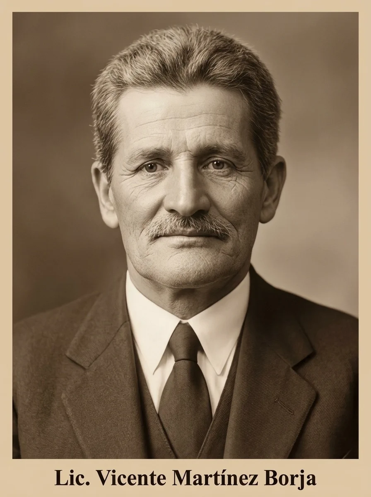
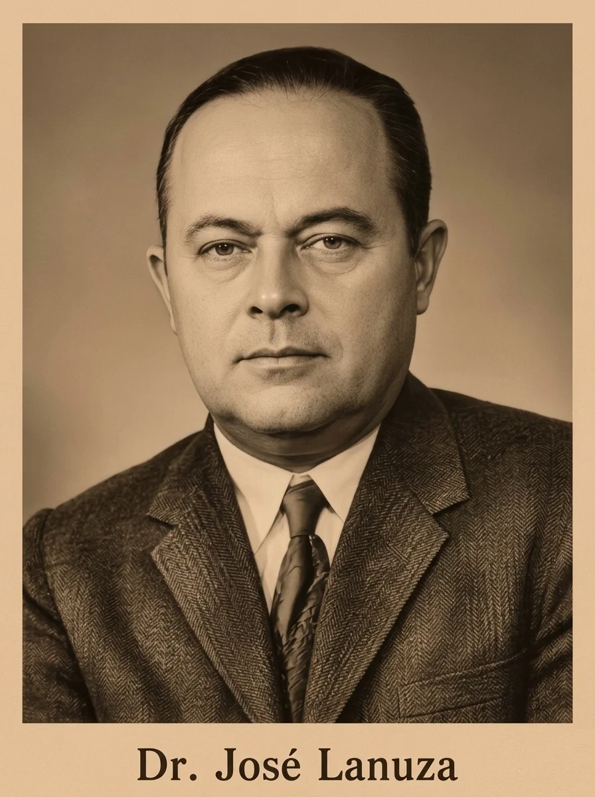
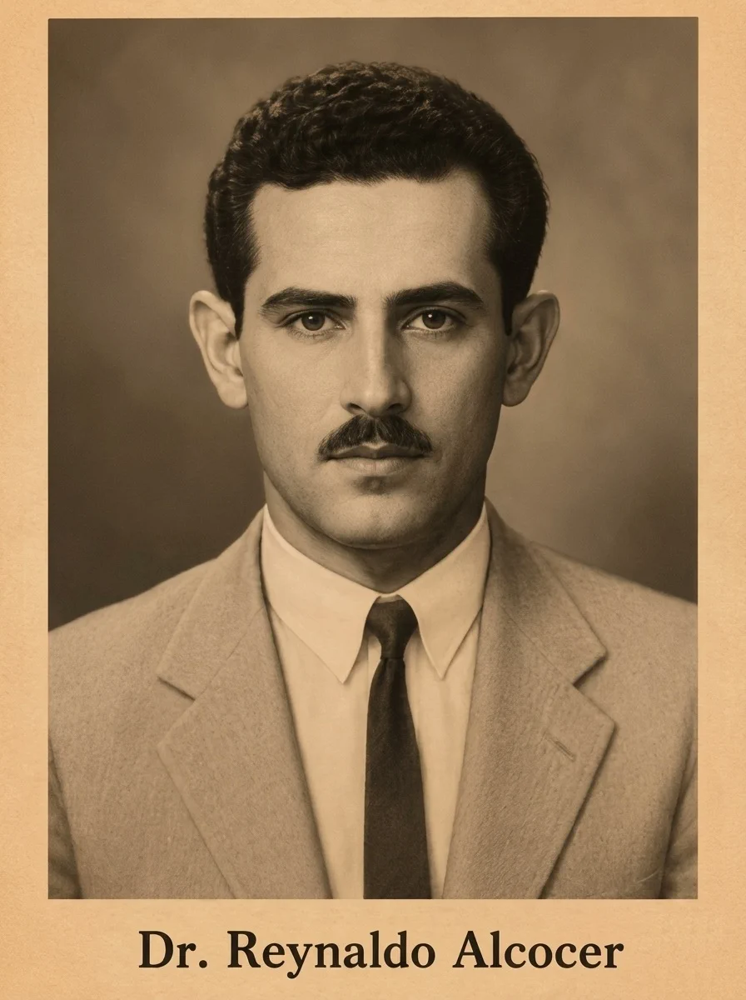
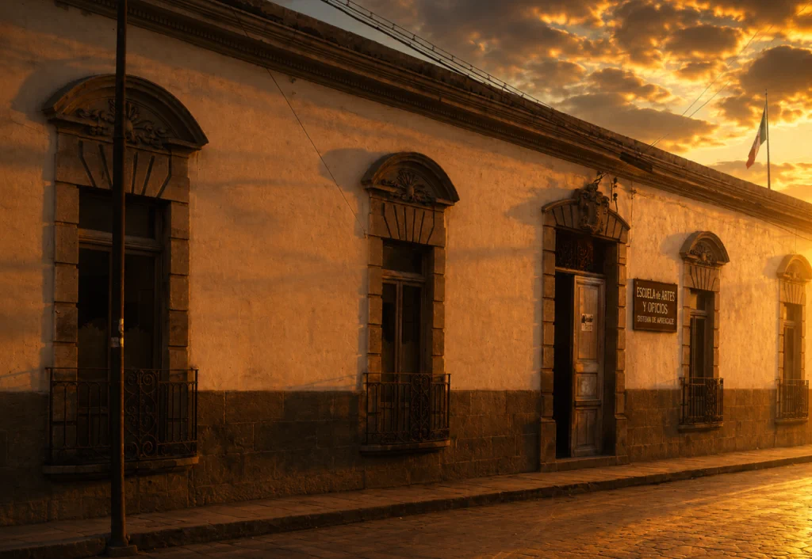
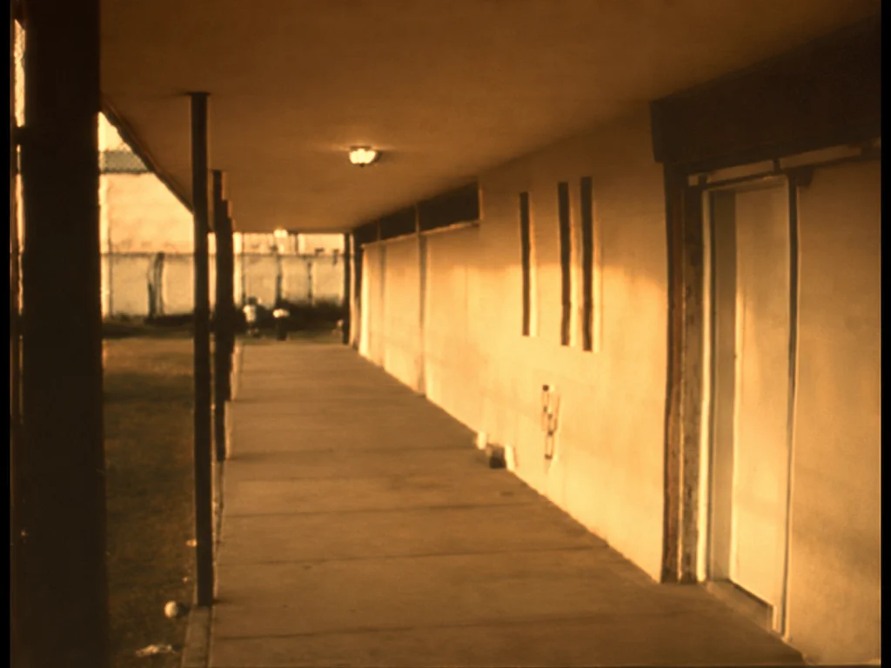
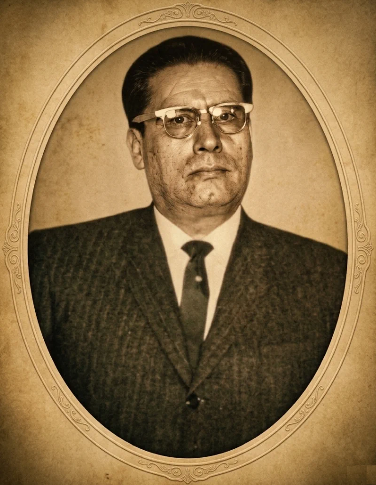
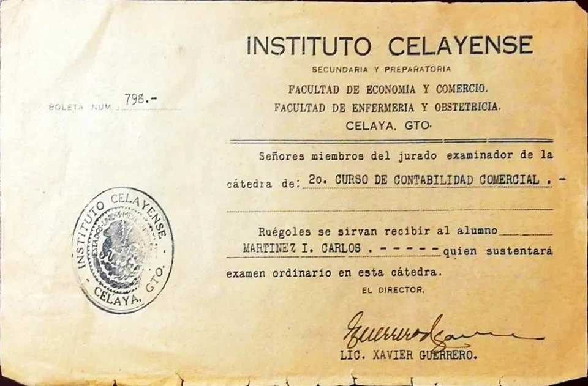

Lic. Vicente Martínez Borja
Maestro vinculado a los primeros años de la formación profesional en Celaya y al impulso de la carrera de Contador Privado en 1933.
1926–1945 · El inicio de una transformación regional
Mientras en Guanajuato se consolidaban estructuras educativas con siglos de historia, en Celaya comenzaba a gestarse un proceso que transformaría el destino académico de la región.
No fue un inicio estructurado. Fue una respuesta a la necesidad.
Y como muchas historias que comienzan desde abajo, no fueron únicamente las instituciones quienes hicieron posible ese cambio. Fueron las personas.
El 6 de enero de 1926 abre sus puertas la Escuela Secundaria Oficial “Dr. Francisco Paredes Velasco”.
Con 55 alumnos, nace una posibilidad educativa en Celaya.
Una institución no se construye solamente con aulas. También necesita personas dispuestas a enseñar cuando todavía no existe una tradición consolidada que las respalde.
Los primeros años de esta historia estuvieron acompañados por maestros que participaron en la formación de las primeras generaciones educativas de Celaya.

Maestro vinculado a los primeros años de la formación profesional en Celaya y al impulso de la carrera de Contador Privado en 1933.

Uno de los primeros maestros vinculados con la formación de las primeras generaciones educativas de Celaya.

Parte del grupo de primeros maestros que participaron en la formación de las primeras generaciones de estudiantes en Celaya.
La educación en Celaya comienza a ampliar sus horizontes. Se crea la carrera de Contador Privado y surge también la formación en enfermería.
La enseñanza deja de concentrarse únicamente en la educación básica y comienza a preparar a los jóvenes para incorporarse a una vida profesional.

La enseñanza de enfermería representa otro paso decisivo: la formación comienza a responder a necesidades concretas de la sociedad celayense y amplía el horizonte profesional de sus estudiantes.

La educación celayense comienza a proyectarse hacia una nueva etapa. Se gestiona la preparatoria en Celaya bajo la visión de Javier Guerrero Rico.

Con 18 alumnos, Celaya inicia su propio camino educativo superior.
Lo que había comenzado como una respuesta a la necesidad educativa de la ciudad comienza a convertirse en una tradición.

Las instituciones permanecen.
Pero las personas dejan memoria.
Y las generaciones transmiten lo aprendido.
Décadas después, quienes vivieron aquellos años todavía conservaban en la memoria las formas en que se construía la vida universitaria en Celaya.
Uno de los contemporáneos y amigos de Don Carlos comparte en este testimonio recuerdos sobre la formación de la primera estudiantina y las dificultades que acompañaron los primeros proyectos universitarios en la ciudad.
Guanajuato cambia.
Celaya responde.
La educación se conecta.
La historia educativa de Celaya no terminó con aquellos primeros maestros. Sus formas de entender la enseñanza fueron heredadas por nuevas generaciones.
Entre ellas se encontraba Don Carlos.
Su historia pertenece a otra etapa, pero algunas de las ideas que caracterizaron aquellos primeros años volverían a aparecer transformadas en su manera de entender la formación de los estudiantes.
Pero el relato no termina en los recuerdos de aquella vida universitaria. También aparece una manera distinta de entender la formación: acercar a los estudiantes al mundo profesional.
Don Carlos impulsaría las visitas a empresas como parte de la formación de los estudiantes, acercándolos a una realidad que ocurría más allá de las aulas.
Al final de su relato, Coco habla también de su propio camino. Terminó ambas carreras y continuó una vida profesional que lo llevaría, entre otras experiencias, a trabajar en el Consulado de Costa Rica.
Su historia permite comprender algo que trasciende las fechas: aquella educación no solamente preparaba para aprobar materias. Podía abrir caminos que sus estudiantes todavía no alcanzaban a imaginar.
Primero fueron las aulas.
Después, las generaciones.
Y con ellas, nuevas formas de entender la educación.
Celaya deja de ser periférica. Empieza a construir identidad propia.
Los primeros maestros abrieron el camino. Las siguientes generaciones comenzaron a transformarlo.